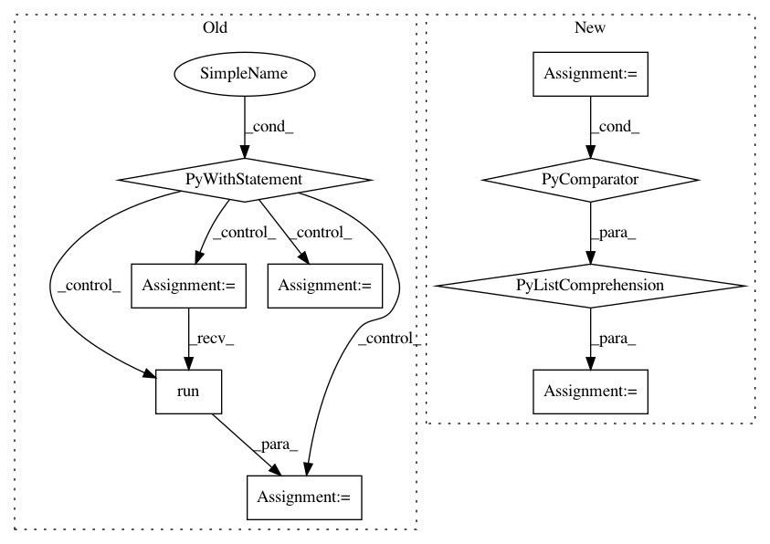

5e854f25098ca40a4ac80197607bf883feaeb375,research/object_detection/utils/learning_schedules_test.py,LearningSchedulesTest,testCosineDecayWithWarmup,#LearningSchedulesTest#,43
Before Change
learning_rate = learning_schedules.cosine_decay_with_warmup(
global_step, learning_rate_base, total_steps,
warmup_learning_rate, warmup_steps)
with self.test_session() as sess:
output_rates = []
for input_global_step in input_global_steps:
output_rate = sess.run(learning_rate,
feed_dict={global_step: input_global_step})
output_rates.append(output_rate)
self.assertAllClose(output_rates, exp_rates)
def testManualStepping(self):
global_step = tf.placeholder(tf.int64, [])
boundaries = [2, 3, 7]
rates = [1.0, 2.0, 3.0, 4.0]
After Change
return (learning_rate,)
exp_rates = [0.1, 0.5, 0.9, 1.0, 0]
input_global_steps = [0, 4, 8, 9, 100]
output_rates = [
self.execute(graph_fn, [np.array(step).astype(np.int64)])
for step in input_global_steps
]
self.assertAllClose(output_rates, exp_rates)
def testManualStepping(self):
def graph_fn(global_step):
In pattern: SUPERPATTERN
Frequency: 3
Non-data size: 9
Instances
Project Name: tensorflow/models
Commit Name: 5e854f25098ca40a4ac80197607bf883feaeb375
Time: 2018-02-13
Author: lzc@google.com
File Name: research/object_detection/utils/learning_schedules_test.py
Class Name: LearningSchedulesTest
Method Name: testCosineDecayWithWarmup
Project Name: tensorflow/models
Commit Name: 5e854f25098ca40a4ac80197607bf883feaeb375
Time: 2018-02-13
Author: lzc@google.com
File Name: research/object_detection/utils/learning_schedules_test.py
Class Name: LearningSchedulesTest
Method Name: testManualStepping
Project Name: onnx/onnx-tensorflow
Commit Name: 054095d922edda5134e520522bc82a1b95cc5bd4
Time: 2020-09-09
Author: smonov@gmail.com
File Name: onnx_tf/backend.py
Class Name: TensorflowBackend
Method Name: run_node